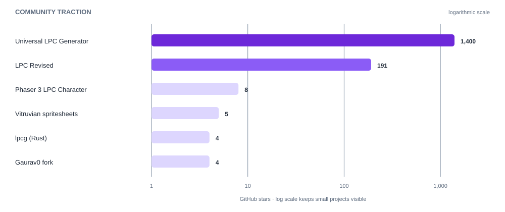

Indie 2D Sprite Pipeline
Market research: how indie devs source, make, animate, and ship sprites - and where it hurts.
Phase 1 · Research
A structured survey of the tools, generators, art sets, and asset libraries that define the modular 2D character-sprite space - the raw material for deciding where this project goes next.
Where this sits
This is the Research phase of the project knowledge base. See the project overview for how research feeds into Design, Planning, and Execution.
Eleven sources cluster into four roles. The Universal LPC Spritesheet Generator is the clear center of gravity - by community traction it dwarfs every other repository in the list.

| Project | GitHub stars | Forks |
|---|---|---|
| Universal LPC Generator (LiberatedPixelCup) | ~1,400 | 522 |
| LPC Revised (ElizaWy/LPC) | 191 | 31 |
| Phaser 3 LPC Character (ivopc) | 8 | 1 |
| Vitruvian spritesheets | 5 | 3 |
| lpcg (buxx) | 4 | 1 |
| Gaurav0 fork of ULPC | 4 | 0 |
1
Shared foundation (LPC) behind 10 of 11 sources
64x64
Base LPC frame size; weapons use oversize frames
5
Open license options across the LPC corpus
6
Body types in the flagship generator
Market research: how indie devs source, make, animate, and ship sprites - and where it hurts.
The origin, style guide, licenses, and vocabulary shared by the whole ecosystem.
The flagship web generator, its live demo, and the Gaurav0 fork.
An alternative generator app plus its own converted spritesheet repo.
A headless Rust library + CLI that merges LPC layers programmatically.
A TypeScript integration that drops LPC characters into the Phaser engine.
ElizaWy's curated, restyled, and expanded take on the LPC art set.
The palette, geometry, lighting, and material rules that define the LPC look.
A themed clothing/prop pack showing how the community extends LPC.
Animal sprites - the original horse set and its Stendhal rework.
A large, CC0, general-purpose asset library outside the LPC world.
LPC ecosystem
Kenney.nl
How to read this research
Each source page follows the same shape: what it is, what it offers, how it is licensed, and how it relates to the rest of the ecosystem - so the set can be compared like-for-like when shaping the project's direction.